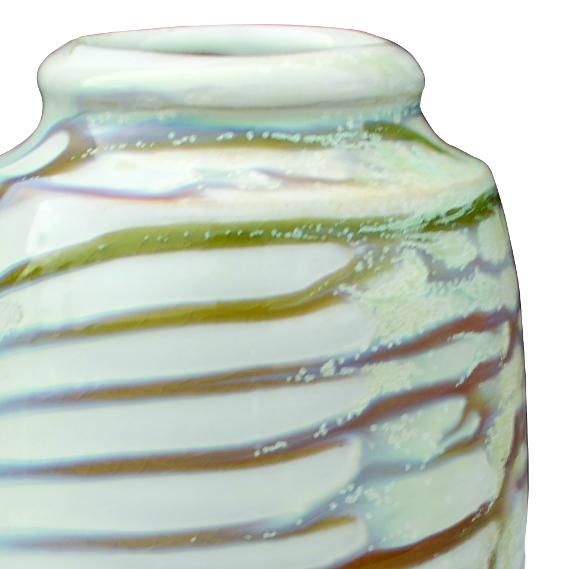

Recipe
Hannahs Fake Ash
A very simple cone 6 fake-ash overlay that Hall-Hough used over V.C. Matte to produce dry mineral movement and atmospheric streaking.
Process
Application: Use as an overlay over V.C. Matte for the published result.
Notes: Hall-Hough side-fired these runny glaze combinations on seashells and wadding over a bisque-fired drip tray. For a blue version, add 1.3% cobalt oxide.
Fit: This is a runny overlay. Protect shelves with shells, wadding, or a drip tray.
Context
Surface tags: fake ash, overlay, dry mineral, runny
Clay bodies: Not captured
Sources: can-hannah-fake-ash, can-vc-matte

Ingredients
| Material | % | Role |
|---|---|---|
| Strontium Carbonate | 10.0 | flux |
| Whiting | 30.0 | flux |
| Cedar Heights Redart | 60.0 | clay and color response |
| Red Iron Oxide | 3.0 | colorant |
| Yellow Ochre | 3.0 | colorant |
Cone-6-Electric
Kiln: electric
Atmosphere: oxidation
Schedule: Cone 6 oxidation/neutral.
Cooling: Not captured.
Hold: 0
Notes
This is useful because it is not a full glaze stack by itself. It is an atmospheric overlay that becomes convincing when paired with a matte, quieter base.
- The published example uses Hannahs Fake Ash over V.C. Matte.
- Hall-Hough also used shells and wadding to manage runoff and create more wood-fire-adjacent presentation.
- This is a strong candidate for test tiles over several matte bases, not just the original one.